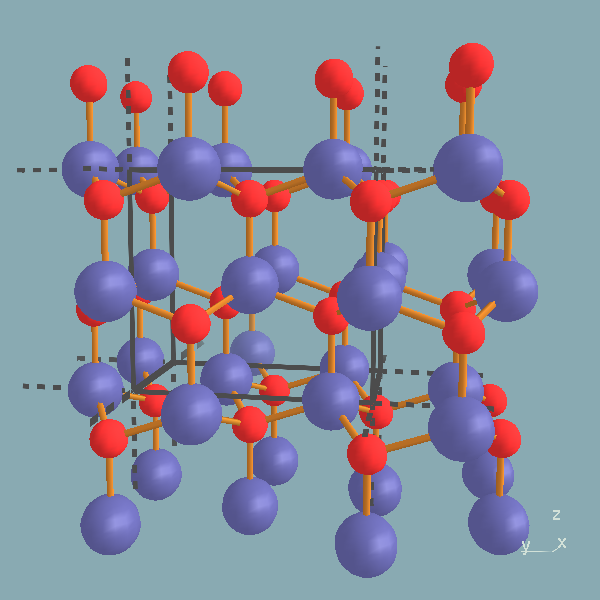
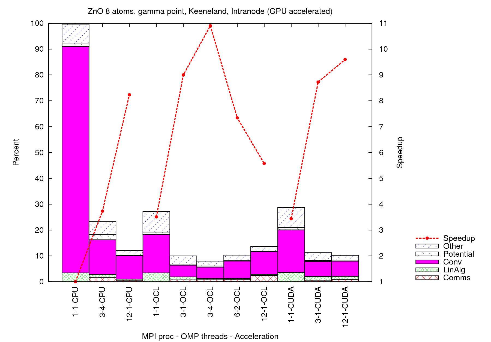
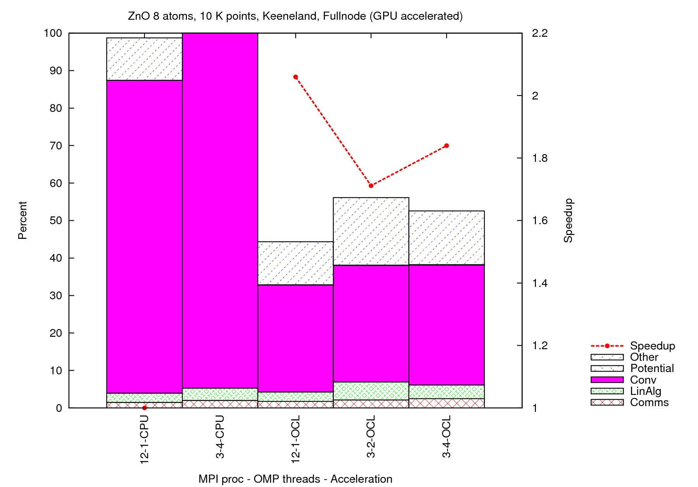

This lesson has been created for current stable version. Versions more recent than 1.5.0 versions are fully capable of running this tutorial but input files may have to be changed according to possible earlier formats.
Acceleration example on different platforms: OpenCL and CUDA version
The purpose of this lesson is to introduce the usage of the GPU version(s) of the BigDFT code. You will learn basics of making GPU runs and how to interpret potential benefits of using GPU version.
Compiling GPU versions of the BigDFT code
To activate the support for GPU with BigDFT, you need a system with a GPU installed, preferentially with a OpenCL driver. Also, you have to compile BigDFT with the acceleration support activated. The OpenCL-based acceleration of BigDFT is fully functional. All Boundary conditions as well as k-points calculation benefit from OpenCL acceleration. The CUDA version is not maintained anymore and is working only for Periodic BC at Gamma point.Compilation of the OpenCL version of the code requires
--enable-opencl option in the configure sequence. Some other options like
--with-ocl-path may also be specified. See the example below (which is installation-specific):
<path_to_distribution>/configure FC=mpif90 FCFLAGS="-O2 -openmp" --with-ext-linalg="-Wl,--start-group -lmkl_intel_lp64 -lmkl_intel_thread -lmkl_core -Wl,--end-group -openmp -lpthread -lm" --enable-opencl --with-ocl-path=/sw/keeneland/cuda/4.1/linux_binary
For the CUDA version --enable-cuda-gpu option should be used
in the configure sequence. --with-cuda-path option may also be specified.
<path_to_distribution>/configure FC=mpif90 FCFLAGS="-O2 -openmp" --with-ext-linalg="-lmkl_lapack95_lp64 -lmkl_intel_lp64 -lguide -lmkl_intel_thread -lmkl_core" --enable-cuda-gpu
Exercise: Compile the OpenCL and CUDA versions of the code in two separate folders.
Create a folder where you want to build the code and switch to that
folder. Call the configure script in the BigDFT main source folder by specifying its
relative or absolute path. Add the options necessary for the version you
want to compile as described above. Check the informative messages at the end of the
configure to see if the OpenCL or CUDA was enabled or not. Specify OpenCL or CUDA path if
it is necessary by the additional options described above. If everything
went okay in the configure you can compile the code by typing make.
Note that, if your system supports it, you might create one single set of binaries valid for both for OpenCL and CUDA implementations.
First Evaluation Level: GPU routines against their CPU counterpart
For both acceleration types, conv_check program makes checks on the GPU related parts of the code.
You can compile and run it by typing make check in the tests/libs/CUDA
or tests/libs/OpenCL subfolder of BigDFT build folder depending on the acceleration
type.
Exercise: Go to your CUDA build folder and switch to subfolder tests/libs/CUDA
. Type: make check to compile and run the conv_check
program. Observe the output which is generated in conv_check.out file.
The output will have comparisons of CPU and GPU timings of code sections which was implemented by CUDA:
CPU Convolutions, dimensions: 124 17160 GPU Convolutions, dimensions: 124 17160 | CPU: ms | Gflops || GPU: ms | GFlops || Ratio | No. Elements | Max. Diff. | | 25.84| 2.64|| 1.07| 63.65|| 24.150| 2127840| 2.2204E-16|
Computation time ratio of CPU and GPU versions are given as
Ratio. Observe that the benefit of using GPU varies depending on the kernel which has been ported (and also from the machine).
Exercise: Go to your OpenCL build folder and switch to subfolder
tests/libs/OpenCL. Type: make check to compile and run the
conv_check program. Observe the output which is generated in conv_check.out
file.
The output will have comparisons of CPU and GPU timings of code sections which was implemented by OpenCL:
CPU Convolutions, dimensions: 124 17160 GPU Convolutions, dimensions: 124 17160 | CPU: ms | Gflops || GPU: ms | GFlops || Ratio | No. Elements | Max. Diff. | | 25.47| 2.67|| 0.87| 78.24|| 29.266| 2127840| 4.4409E-16|
Computation time ratio of CPU and GPU versions are given as
Ratio. Observe that the OpenCL version has more kernel which have been ported compared
to CUDA version for specific parts of the code and OpenCL version has more GPU enabled
code sections. Also, optimisation where pushed further. Therefore, OpenCL version of the code should be preferred.
In particular, the CUDA version of the code works only for fully periodic BC at gamma point only.
It has therefore less functionalities and it is not maintained anymore.
Kohn-Sham DFT Operation with GPU acceleration
The GPU acceleration of kernels presented so far is somehow disconnected to a production run. One might wonder how these preformances will reflect in the behaviour of a full run. In order to test the behaviour of the complete code operations, a functionality is added in thebigdft-tool program.
This functionality, called GPU-test will run the GPU-related BigDFT unitary 3D operations (Density construction, Local Hamiltonian and preconditioning) with and without GPU acceleration, for the set of input files which is provided.
This is a useful tool to predict the potential advantages of GPU usage for a given system. Indeed, these operations belong to the "Convolutions" category of the time.yaml file.
Exercise: To activate the GPU-test you should call bigdft-tool this way:
<path_to_build>/bigdft-tool --name=<name> -a GPU-test --n-repeat=<nrep> --n-orbs=<norbs>where
<name>, <nrep> and <norbs> are optional arguments indicating the run name, the number of repetitions of the calculation and the number of orbitals treated. their default values are none, 1 and norb (the total number of orbitals in the system), respectively.
The output will have comparisons of CPU and GPU timings of code sections which was implemented by OpenCL and CUDA:
---------------------------------- CPU-GPU comparison: Density calculation | CPU: ms | Gflops || GPU: ms | GFlops || Ratio | No. Elements | Max. Diff. | | 37.36| 2.63|| 2.81| 34.98|| 13.294| 512000| 9.7145E-17| ---------------------------------- CPU-GPU comparison: Local Hamiltonian calculation ekin,epot= 56.3306474633124 93.0696865423315 ekinGPU,epotGPU 56.3306474633134 93.0696865423313 | CPU: ms | Gflops || GPU: ms | GFlops || Ratio | No. Elements | Max. Diff. | | 117.52| 2.28|| 7.46| 35.98|| 15.762| 65536000| 7.4772E-16| ---------------------------------- CPU-GPU comparison: Linear Algebra (Blas) | CPU: ms | Gflops || GPU: ms | GFlops || Ratio | No. Elements | Max. Diff. | | 1789.95| 9.37|| 1790.32| 9.37|| 1.000| 16384| 0.0000E+00| | CPU: ms | Gflops || GPU: ms | GFlops || Ratio | No. Elements | Max. Diff. | | 1315.30| 6.43|| 1314.96| 6.43|| 1.000| 16384| 0.0000E+00| ---------------------------------- CPU-GPU comparison: Preconditioner gnrm 284.904515990837 gnrmGPU 284.904515990839 | CPU: ms | Gflops || GPU: ms | GFlops || Ratio | No. Elements | Max. Diff. | | 133.67| 4.10|| 20.51| 26.72|| 6.519| 65536000| 3.1919E-16| Ratios: 13.294 15.762 1.000 1.000 6.519
Run these features with the systems presented in these page, with and without CUDA (if available). Experience Amdahl's law: compare the behaviours with the run of the whole code (see below).
The complete code: managing multiple GPU with MPI
For both OpenCL and CUDA versions an additional input file input.perf
should be provided for the BigDFT run.
This file contains performance-oriented varaibles, and it is the sole input file of BigDFT inpu
For OpenCL version, one of the lines of this file
should have the keywords ACCEL OCLGPU.
For CUDA version the keywords should
be ACCEL CUDAGPU and an additional file called
GPU.config should also be provided with some parameter values, which control explicitly the Multi-GPU association:
USE_SHARED=0 MPI_TASKS_PER_NODE=1 NUM_GPU=1 GPU_CPUS_AFF_0=0,1,2,3 GPU_CPUS_AFF_1=4,5,6,7 USE_GPU_BLAS=1 USE_GPU_CONV=1
For the OpenCL case, these association are performed automatically. Given the number of MPI processes per node, GPU devices are associated with them, in a round-robin scheme. Memory transfers and computation between different processes associated to the same card are then overlapped and scheduled by the queue handler of OpenCL driver.
Benefit of using GPU version depends on the system studied. If for a specific system, most of the computation time is spent in GPU enabled parts of the code, using GPU version would be very beneficial. However, some system runs require most of the computation to be done with the code sections not using GPU, such as the Poisson solver.
Exercise: Do total energy calculations for a periodic ZnO 8-atom supercell (see figure) using CPU, CUDA and OpenCL
versions of the code.

You will need ZnO.dft
and ZnO.xyz, and also ZnO.perf for this computation.
For the CUDA computations create the additional input file(s) described above.
In order to compare with CUDA, do for the moment a gamma-point only calculation (which means that another input file should be added for k-points, see below).
Compare computation times of different versions.
As described in the previous lesson, in actual performance evaluations, the correct quantity which should be considered is the WFN_OPT category in the (data/)time.yaml file. Indeed, the initialization and finalization timings (including the timings needed to compile OpenCL kernels of for initialize S_GPU library in CUDA) are not representatives of actual performances.
Note that, in OpenCL standard, kernels are compiled at runtime. This can be see during the initialization of the code. Of course, this happens at the beginning of the run. In a production run with multiple execution of BigDFT (e.g. a geometry optimisation run), this is only performed at the very beginning and it will not create artificial slowdown.
So you should use theprocess_time.rb script which has been presented in the previous lesson:
> ruby process_time.rb time.yamlTogether with the
weak_scaling.gnuplot script
(also a strong_scaling.gnuplot script is available to compare relative behaviour of runs).
Consider also the results when including MPI parallelisation. Remember that, if on a node the number of MPI processes per node is bigger than the number of devices, GPU are shared as explained above. In evaluating performances, consider that, for this system GPU accelerated routines are not hot-spot operations.
You might also consider to do a realistic system with K-points (from ZnO.kpt file). In this case, OpenCL acceleration only should be considered.


Which conclusions can be extracted from these results? Here some examples:
- OpenCL and CUDA acceleration efficiency are identical for this system until we associate one card to one MPI process. Overloading the card in OpenCL degradates the SpeedUp whereas this does not happen with CUDA. This is presumably due to a not optimal handling by the OpenCL driver, of memory transfer on the card and calculation. This effect is more visible since the number of orbitals which are associated to each MPI process is rather little (the systemn has 36 orbitals), and it does not happen for bigger cases (see below)
- Combining OpenCL with MPI and OpenMP is possible and gives effective advantages.
- The Speedup of the bottom figure is given with respect to the best full node occupancy in pure CPU, so it is a internode-like speedup.
- Does this behaviour would have been predictible by using GPU-test and CPU runs, without running the whole system? Are all the relevant variables taken into account?
Architecture dependency: conclusions are machine-dependent
To illustrate the dependency of system architecture with respect to the results you might obtain, it could be interesting to simulate the behaviour of a system in which the GPU-accelerated operations are dominant. For example, a calculation of a small supercell with lots of K-points does the job.
Exercise: Do total energy calculations for the system described by the files input.dft
and posinp.ascii, psppar.C and also input.perf.
As a illustration of the differences you can find in the enclosed figure the difference in performances for the same run on
16 and 128 processors, with and without GPUs on two machines: the Swiss CSCS "Todi", with nodes with 1 16-Core AMD Opteron and 1 NVIDIA Tesla X2090 GPU, and the US NICS "Keeneland", whose nodes have two Intel Westmere hex-core CPUs and three NVIDIA 6GB Fermi GPUs. The CPU are twice as faster in Keeneland, and if we combine this with GPU (the last run in the Figure has been done with 2 MPI process per node), for such run SU can be really big.